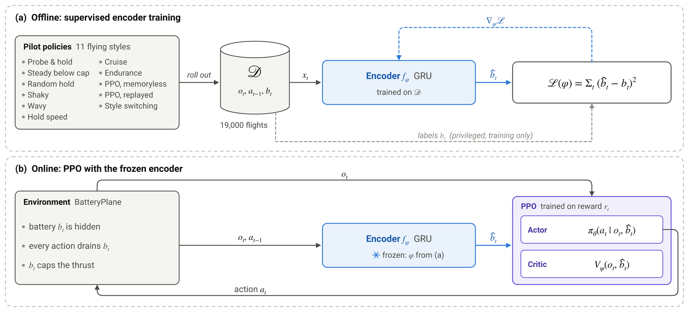

Contextual PPO
How an agent that never sees its battery can still act on it: a memory that infers the battery from the flight so far, why training that memory together with the policy fails, and the recipe that works.
The idea: a memory that infers the battery
The policy cannot see its battery, but the flight so far carries information about it. At full throttle a fuller battery pushes harder, and every action drains it by a known amount. So we give PPO a memory: a recurrent encoder that reads the history and keeps a running estimate of the battery.
- reads
- each observation and the previous action
- keeps
- a memory ht of the flight so far
- outputs
- zt = b̂t, its estimate of the battery
- read
- the observation plus the battery estimate
- learn
- from the reward alone, with PPO
- label
- the true battery bt, used during training only
- at test
- nothing privileged: the estimate comes from the flight itself
This is Contextual PPO. The question is how to train the encoder so that its estimate is right on the flights that matter.
First attempt: train everything together
The natural way trains the encoder and the policy at the same time, on the agent's own flights: after every PPO update, the encoder takes a few steps towards the true battery on the latest episodes. We tried it with an xLSTM (experiment A) and a GRU (joint training, J0–J5). It fails: on the final test the xLSTM version scores 42 and the best GRU version 150, no better than Contextual PPO without any memory (155), while the same learner given the true battery scores 286.
The reason is autogenic. The policy decides which flights its own encoder learns from:
- The policy settles on one style. Early on the estimate is useless, so the policy learns to fly the same way at every battery.
- That style rarely reveals the battery. The battery only shows while the motor runs at its limit, and a policy that rations never does.
- So the encoder learns a clock. On those flights the battery is roughly a function of time, which the encoder can predict without reading the physics.
- So the policy ignores the estimate, and the loop closes: neither part gives the other a reason to change.
More encoder training, an entropy bonus, a Gaussian head, a curiosity bonus and a warm-up all leave it at the memoryless level (see Ablations).
Our recipe: learn the battery from many pilots, then freeze it
We break the loop by taking the encoder's data out of the policy's hands, in two stages.

- Stage 1, offline: 11 scripted and learned pilots fly 19,000 flights in different styles. A GRU learns to predict the battery at every step of those flights.
- Stage 2, frozen: the encoder no longer changes. Plain PPO reads its estimate as one extra input next to the observation and learns from the reward alone.
- Why it works: the pilots' variety includes flights that reveal the battery and flights that hide it, so a clock no longer fits and the encoder has to learn the physics. And because it is frozen, its estimate means the same thing throughout the policy's training.
- The result: plain PPO with the frozen GRU scores 238 on the final test, against 49 without battery information and 283 with the true battery. Trained on the ideal Bayesian estimate instead of the true battery, the same GRU brings PPO to 330 (see Results and Ablations).
The pilots
To train the encoder offline we fly the plane with 11 scripted and learned pilots in different styles and record 19,000 flights. Variety matters: some styles reveal the battery, others hide it completely.
Every setting of the encoders and of both learners is in the configuration tables.